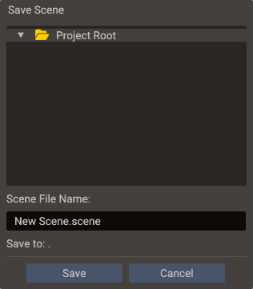
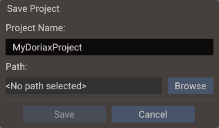

Project Workflow¶
A Quantum project is the editable source for a game. It organizes scenes, resources, scripts, bundles, and export configuration into a single directory that the editor understands. The editor keeps visual authoring, code, and build settings clearly separated so teams can iterate and collaborate effectively.
Creating a project¶
Quantum does not display a startup dialog. When the editor launches, it reopens the
last saved project if that project is still available. Otherwise, it opens a temporary
project named MyQuantumProject with a new 3D scene so you can begin editing
immediately. File → New Project also replaces the current project with a fresh
temporary project.
To keep a temporary project:
- Choose File → Save All (Ctrl+Shift+S). On a temporary project, Save (Ctrl+S) does the same thing, because there is nowhere to save a single file to yet.
- The editor saves the open scenes and scripts, asking where any never-saved scene should go, and then asks for the project itself.
- Enter the project name, click Browse, and select an empty directory.
- Click Save. The editor moves the temporary project into that directory and
writes its
project.yamlfile.


Temporary projects are stored in the operating system's temporary directory. Save the project to another directory before relying on it as permanent work.
New projects begin with a 3D scene. To add a different scene type, choose Scene → New Scene → 2D Scene or Scene → New Scene → UI Scene. Quantum does not use project templates.
Project anatomy¶
| Area | Purpose |
|---|---|
assets/ (or resources/) |
Textures, models, fonts, sounds, materials, and other imported files. The folder chosen as the assets directory is the root every asset reference is stored against |
scenes/ |
YAML scene files edited by the visual editor |
scripts/ |
Lua scripts and C++ source files |
shaders/ |
Default location for forked shader sources (.vert/.frag/.glsl), and where compiled .sdat output goes — see Custom Shaders |
bundles/ |
Reusable entity hierarchy files |
settings/ |
Scene startup references, build target settings, and export configuration |
.quantum/ |
The editor's own working directory: generated C++, build trees, models converted from FBX, and the settings that belong to your machine and your session. Recreated as needed and never committed — see Version Control |
Folder names may differ by project. The structure is a convention, not a strict requirement — you can reorganize asset folders and update resource paths accordingly.
Scene files¶
Scene files are serialized as YAML. They store the full scene hierarchy: entities, component data, transform values, camera settings, and child scene references. Where you left the editor camera is not part of the scene — that is per-user state, kept out of the file so it never appears in a commit.
Keep scene files focused. For large games, split gameplay areas into separate scenes and compose them with child scene references. This keeps individual YAML files small and merge-friendly in version control.
Scene types¶
The editor offers three scene workflows:
| Type | Editor defaults | Typical content |
|---|---|---|
| 3D | Perspective editor camera, 3D gizmos, lighting panel | Models, lights, camera, terrain, physics bodies |
| 2D | Orthographic camera, 2D canvas gizmos | Sprites, tilemaps, polygon shapes, 2D physics |
| UI | Screen-space canvas, anchor gizmos | Buttons, text, images, panels, scrollbars |
All three share the same Scene class at runtime — the type mainly affects editor
defaults and authoring tools. A 3D scene can contain UI entities, and a UI scene can
reference 2D or 3D child scenes.
Child scenes¶
Child scenes let one scene reference and load another. This is useful for:
- Persistent UI layers — load a HUD scene as a child of the gameplay scene.
- Shared environment — a common lighting rig or skybox loaded by all levels.
- Level assembly — large worlds assembled from smaller room or chunk scenes.
- Streaming — load and unload sections independently at runtime.
Each scene runs its own physics world, so bodies in different scenes don't collide. See Physics across scenes before you split gameplay physics across chunks.
To add a child scene reference, use the Structure panel's Add Child Scene option and point it to a saved scene file.
Bundles¶
Bundles are prefab-like reusable entity hierarchies. A bundle can represent an enemy, an interactive prop, a UI card, or any repeated arrangement of entities and components. They are defined visually in the editor and stored as YAML bundle files.
Why bundles?¶
| Advantage | Detail |
|---|---|
| Shared across scenes | The same bundle can be placed in any number of scenes without duplicating data |
| Single source of truth | Changing a bundle updates every instance in every scene that references it |
| Runtime factory | During export, bundles become factory functions; BundleManager creates and destroys instances at runtime |
| No coupling | Bundles are independent of the scenes that use them — they can be loaded on demand |
Creating a bundle¶
- Build the entity hierarchy you want to reuse in any scene.
- In the Resources Browser, open the folder the bundle should be saved to.
- Select the root entity in the Structure panel, right-click it and choose Save as Bundle — or simply drag the entity onto the Resources Browser.
Either way the editor writes <EntityName>.bundle into the open folder and replaces
the hierarchy in the scene with an instance of the new bundle. Rename the file in the
Resources Browser if you want a different name. A .bundle file can live in any
project folder, so bundles/ is a convention rather than a requirement.
Placing bundles¶
Drag a .bundle file from the Resources Browser onto the Structure panel — drop it on
the scene root, or on an entity with a Transform to parent the instance there.
Runtime bundle usage¶
Bundle registration is generated automatically by the export step. At runtime you call
createBundle (bundle name first, then scene) and destroyBundle. Entity IDs are
scene-local, so parent under an existing entity with createBundle(name, scene, "parentName")
or pass an object that already carries its scene:
// Registration is normally emitted by export:
BundleManager::registerBundle(1, "enemy_grunt", [](Scene* scene, Entity parent) -> bool {
// bundle factory body
return true;
});
Entity root = BundleManager::createBundle("enemy_grunt", &scene);
BundleManager::createBundle("enemy_grunt", &scene, "spawn");
A bundle no scene instantiates is only built and registered while it is listed in Project → Bundles — see Bundles in the build.
See BundleManager for the complete API.
Settings¶
Settings are split by what they belong to, which decides where they are stored and whether they travel with the project:
| Settings area | Opened from | Stored in | Holds |
|---|---|---|---|
| Project settings | Project → Project Settings | project.yaml |
Start scene, application identity, canvas, window, VSync, asset/Lua/script directories, native resource packaging, and the per-platform settings for Web, Linux, Windows, macOS, iOS and Android |
| Editor settings | Edit → Editor Settings | settings.yaml, with API keys and the MCP token in ai_keys.dat |
Compiler kit, CMake and Emscripten paths, default export directory, editor VSync, UI scale, AI Chat keys and limits, the MCP server |
| Export settings | File → Export Project | project.yaml (export) and the project's .quantum/user/build.yaml |
Shader overrides and graphic backends in the project; output directories per machine |
| Machine settings | — | .quantum/user/build.yaml |
The compiler kit, build jobs and export folders chosen for this project on this machine |
| Editor workspace | — | .quantum/user/workspace.yaml |
Open tabs and their order, the selected scene, each scene's editor camera and viewport guides, the terrain brush |
| Window and layout state | — | settings.yaml |
Window size, maximized state, recent projects, panel visibility, Resources Browser preferences |
Two dividing lines run through that table. The first is the machine: a compiler path, an
SDK location, an output folder. The second is the session: which tabs you had open and
where you left each camera. Neither belongs to the game, so both are kept out of
project.yaml and out of version control — see Version Control.
Everything in the last three rows lives beside the project rather than in the editor's own configuration, so Save Project As carries it along and a project copied to another drive keeps working.
Shaders have no directory setting: each fork picks its own location when you create it,
and compiled .sdat output always goes to the project's shaders folder. See
Custom Shaders.
The rest of this page covers the behavior behind a few of those settings. For the field list of each dialog, see Project Settings and Editor Settings.
Assets and Lua directories¶
Project → Project Settings → Directories picks the two folders the running game reads
from. Both default to <Project root>, which keeps the whole project as the root.
| Setting | Root for | Resolved at runtime through |
|---|---|---|
| Assets Directory | Textures, models, sounds, fonts | asset://, and every plain relative path |
| Lua Directory | Lua script entries and the data files they read | lua:// |
References are stored relative to these roots, not to the project. With the assets
directory set to assets, a texture in assets/textures/hero.png is stored as
textures/hero.png, which is exactly what the exported game finds next to its executable.
Changing either directory migrates the project in one step:
- referenced files that would fall outside the new root are moved into it, keeping
their folder layout so a model still finds its
.binand textures; - every reference is rewritten in scenes, bundles and
.materialfiles — scenes that are not open are loaded for the rewrite and closed again; - if any file cannot be moved, every move is undone and the directories are left unchanged, so the project is never half-migrated.
Because a reference cannot leave its root, the editor only accepts assets from inside the
assets directory: dropping a file from elsewhere previews it but shows a warning instead of
assigning it. Maps painted in the Terrain Editor (under terrain_maps/) and assets
downloaded by the AI assistant are created under the assets root for the same reason. Moving a referenced file out of the
assets directory clears the references to it, exactly like deleting it.
Script directories¶
The Directories tab also has a Script Directories list, which is about the C++
build rather than what the running game reads. Each folder you add is both an include
root and a compile root: headers under it are included by the path below the folder, and
every .cpp under it is compiled even when no entity references it.
The list starts empty, and only the folders you add are affected — a project without script directories builds exactly as before. Use Add to pick a folder and the trash icon to remove one. Keep them inside the project: an outside folder builds in the editor but is skipped when exporting.
See C++ Build Setup → Script directories
for the full behaviour, and Customizing the
build for ProjectBuild.cmake, which
covers what this setting does not — linking libraries and other CMake of your own.
Native resource pack¶
Project → Project Settings → Directories → Native Resource Pack controls whether a
native export ships the copied assets and Lua files as loose directories or combines
them into one resources.pak file. The option is experimental and disabled by default.
It is intended for Desktop exports and Android builds made from Source Code
exports; Web exports continue to use Emscripten's own .data bundle.
The choice is saved as packNativeResources in project.yaml, so the Export Window,
command-line export, and editor automation all use the same project setting. Packing is
an export step and never changes the source assets or Lua directories. Editor Play mode
always reads those loose project files.
Packed entries are obfuscated, not encrypted, and each entry is loaded into memory when
opened. Engine resource loaders, Lua modules, and Data can read the pack transparently,
but a direct File handle cannot. Review the Native resource pack
section before enabling it for a project that opens asset or Lua files itself.
VSync¶
Open Project → Project Settings and use VSync to choose whether Play mode and supported desktop builds synchronize frames to the display refresh rate. It is enabled by default. Disable it when profiling the maximum frame rate; leave it enabled for normal use to avoid tearing and unnecessary GPU load.
The value is saved as vsync in project.yaml and travels with the project. Older
projects without the field default to enabled.
| Runtime path | VSync off behavior |
|---|---|
| Editor Play mode | Uncaps the editor render loop while a scene is running; editing frames follow Editor Settings → Editor VSync instead |
| Generated standalone GLFW build | Uses swap interval 0 |
| Exported Linux GLFW, Windows/Linux Sokol OpenGL, or Windows Direct3D 11 build | Uses swap interval 0 |
| Exported Vulkan build | Prefers Immediate presentation, then Mailbox; falls back to FIFO if neither is supported by the system |
| Exported macOS Metal build | Remains synchronized; the generated CMake project prints a warning |
Platform control
A graphics driver, compositor, or window system may still impose presentation limits after VSync is disabled. Compare a standalone build when collecting final performance numbers because the editor adds its own rendering overhead.
Editor VSync¶
The project setting above covers Play mode and builds. The editor's own frames follow
Edit → Editor Settings → General → Editor VSync, which is enabled by default and
saved as vsync under editor in settings.yaml. It belongs to the machine rather
than the project, so it is not exported and does not travel with a project you share.
The two settings never apply at once: while a scene is running frames follow the project setting, and the rest of the time they follow this one. Toggling takes effect on the next frame, with no restart. An unfocused editor window drops synchronization either way, so a blocked present can never stall the window's event loop. It is paced to the display's refresh rate instead, so a running scene keeps its frame rate.
Disabling it only lifts the frame cap while you are interacting or a scene is redrawing. An idle editor waits on the window system regardless, so it does not spin. A pointer resting on the scene view does not count, and moving it counts only while a gizmo or the terrain brush is shown.
Window¶
Open Project → Project Settings to control the OS window that desktop builds create at startup:
| Setting | Default | Effect |
|---|---|---|
| Window Mode | Windowed | Initial window state: Windowed, Maximized, or Fullscreen |
| Window Width / Height | Canvas size | Initial window size in pixels, and the size restored when leaving fullscreen |
| Window Resizable | Enabled | Whether the player can resize the window |
| Window Title | Project name | Title-bar text; leave empty to use the project name |
| Icon | None | Application icon for desktop builds — see Project Settings → Window |
The values are saved as windowMode, windowWidth, windowHeight,
windowResizable, and windowTitle in project.yaml and travel with the project.
Projects saved before these fields existed start windowed at their canvas size.
Fullscreen starts the game on the primary monitor at the current desktop video mode
(borderless-style, no display mode switch) and falls back to windowed when no monitor
is available. Scripts can still toggle fullscreen at runtime with
requestFullscreen / exitFullscreen;
leaving fullscreen restores the configured window size.
| Runtime path | Behavior |
|---|---|
| Editor Play mode | Not affected — Play renders inside the editor viewport |
| Generated standalone GLFW build | All settings honored |
| Exported Linux GLFW build | All settings honored |
| Exported Windows/macOS Sokol build | Size, title, and fullscreen honored; Maximized falls back to windowed and the window is always resizable |
| Exported macOS Xcode (apple backend) build | Uses the storyboard-defined window; project window settings are not applied |
| Web, Android, iOS | Ignored — the game always fills the browser canvas or the device screen |
Save strategy¶
Save (Ctrl+S) saves one thing: the script you last edited if the Code Editor had
focus, otherwise the selected scene. Save All (Ctrl+Shift+S) saves every changed
scene and script and writes project.yaml, which is what commits settings changes —
the settings dialogs apply to the open project immediately but do not write the file
themselves. Save Project As moves the project to another folder, taking its
machine-local editor settings with it.
Scenes, bundles, and project.yaml are written to a temporary file that then replaces the
old one, so a save that fails (a full disk, a read-only folder) leaves the previous file
intact.
- Save scenes after structural edits (Ctrl+S).
- Use Save All after changing project or export settings, so
project.yamlis written. - Keep generated export output outside the source project folder.
- Commit human-authored files (scenes, scripts, assets) and
project.yaml; the editor writes the.gitignorethat excludes the rest — see Version Control.